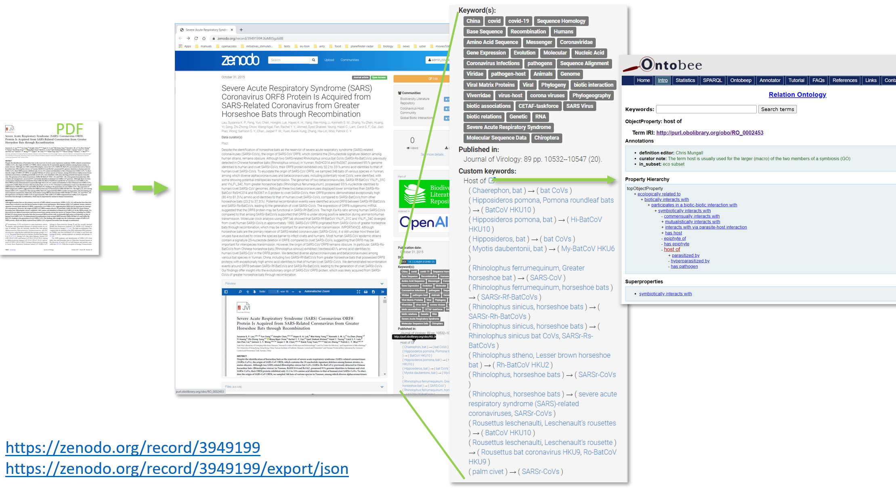

Time for an interim review of Plazi’s Covid-19 related activities

Three months ago we started with Pensoft an effort (see also press release) to contribute to a better understanding of the SARS-CoV-2 (severe acute respiratory syndrome coronavirus 2) aka corona virus that led to the global COVID-19 pandemic, and in the followup joined the CETAF-Covid-19 task force. With the end of the three months long taskforce we present here our view. A multimedia presentation by the knowledge base task force sub group has been streamed on July 17.
Access to data in bat related biodiversity publications
We started our effort under the assumptions that taxonomic knowledge of bats, the main known source of zoonotic virus spill-overs to humans, is reasonably well documented. Liberating treatments and figures from digital copies of bat literature was thus our initial aim. The situation, however, turned out to be rather different.
The taxonomy of bats is, in fact, not up-to-date on the main taxonomic name services. The Catalogue of Life was missing many taxa and synonyms. Batnames.org, the community resource for bat research, had an online list, but to get the entire list, including synonyms, required contacting the authors first. Mammal Species of the World had an online list of bat species, including subspecies that could be downloaded as a MS-Excel spreadsheet, an excerpt of the published catalogue, and eventually the names would link to the PDF including the cited references. The most recent catalogue, the volume 9, Chiroptera in the Handbook of the Mammals of the World was published in 2019 as a book only priced at EUR 160, came with a CD-ROM of the cited literature. One section covered biology, another taxonomy. All these resources were short of changes of status of names, and publications augmenting the knowledge about a taxon.
Access to literature was only to some extent available, often only indirectly by the combination of taxon authority and year (e.g. Rhinolophus sinicus K. Andersen, 1905), at best as a bibliographic reference hardly ever complemented with a digital object identifier (DOI) or a link to a digital copy of the referenced work.
With this barrier, access to biotic interactions, behavioral traits such as co-roosting as source for lateral transmission of viruses, predator-prey relationships, a main use case by our task force is seriously limited, invoking a major effort to advance. Access to literature was furthermore complicated by the confinement which led to a separation of the scientists from their resources, such as collections of PDFs or hard copies.
The first conclusion thus is that at the launch of the task force work, much more time for preparation to data liberation, such as creating a catalogue of bats with extended bibliographic references as starting point to finding the original publications, and for that finding and contacting the appropriate scientists was needed. Even for groups with well curated catalogues, the step from a referenced bibliographic record to have all the digital copies at hand comes at a great cost.
The CETAF task force as an ad hoc group
The formation of the CETAF Covid-19 task force we joined early on, has been a very unusual experience. The very wide expertise in the group, the curiosity to find out what the other members do, and sharing of resources led to a very constructive team, as part of an equally inspiring task force membership. The expertise included taxonomy, ecology, biodiversity informatics, and skills from liberating data, cataloguing, building repositories, reuse of data in GBIF and GloBI to scientific analyses.
Aspects of the virus spill-over has been the guiding theme. Discussing and implementing the input workflow to answer respective research questions, being confronted with all the pitfalls, inspired and helped the creation of prospective publishing tools by Pensoft, GloBI and Plazi. The aim was to publish biotic interactions in a format that can be reused by machine without any further semantic conversion. It also inspired the insertion of biotic interactions specific metadata at Zenodo. This allows annotating relevant publications not only with the host and virus names mentioned in the article, but also with the specific interactions needed for further analyses.
The second conclusion is that the circumstances led to an ad hoc team of scientists that openly shared data, expertise and time that exceeded what research team normally has. This setup advanced substantially the knowledge of the biology of the bat virus interactions, with implications well beyond the theme of the task force itself.
The role of taxonomic names
Taxonomic names are one way to organize the knowledge of biodiversity. Over time and with increasing knowledge, the names associated with taxon concepts can change, covering more or less inclusive concepts. These are based on specimens, a.k.a. vouchers, which would not necessarily change their names in due course, especially in the databases. Thus there is a substantial amount of data available which will not be discovered with the names in use in 2020 because the links to previous name usages are not available, or because specimens have been misidentified.
The taxonomic literature has a convention to cite previous taxonomic treatments and type the relationship, making it explicit when a name changes, and explaining at the same time why. This relationship can be tagged and are at the base of Synospecies, a tool based on facts (RDF triples) in a triple store provided by Franz. This service can provide the current status of a taxonomic name and all its alternatives, for example for the main bat focus species in Covid-19, Rhinolophus sinicus Andersen, 1905. Having the link to the treatment allows access to the data a scientist used to propose, augment or deprecate a taxon.
For bats, 1412 treatments covering 1072 taxonomic names, 505 treatment citations, and 63 new species from 95 publications are now available on Plazi. It also allows to link cited specimens in a treatment to the actual specimen and potentially to link a specimen to the treatments where it has been used.
The third conclusion is that we have new, complementary tools to mine and visualize data in the biodiversity literature, such as treatments and treatment citations as baseline for the catalogue of life and at the same time provide access to all the data about the taxa.
Access to and data extraction
Our tool and service to mine biodiversity literature is the Plazi data liberation workflow. Its first step is preparing the respective literature for machine conversion. Two bat specific resources batnames.org and Mammal Species of the World were online accessible, whereas all the other previous catalogues only exist in printed format. As a consequence, we purchased printed copies of the catalogues, cut the spine of the books off, scanned, OCRed and deposited a digital copy in the Biodiversity Literature Repository and the Corona Host Virus community at Zenodo (e.g. Honacki et al. 1982, Corbet & Hill, 1991; Burgin, 2019). The Dutch digitization company Picturae supported the work by scanning for us our purchased Bats catalogues.
Another source has been BioOne and Acta Chiropterologica which agreed to collaborate to explore and provide access to data in their bat specific scientific journal. The conversion of 44 articles liberated 552 treatments, 401 figures, 26 new species (Summary; Detail).
A third source has been a pre-processed copy of Linnaeus’ Systema Naturae from 1758, the starting point of modern taxonomy supplied by Richard Pyle from Zoobank. This converted copy originated from Dave Remsen who converted the original copy into text which then got refined by Richard Pyle (TreatmentBank; GBIF)
A forth source has been from Gabor Csorba who provided an extensive collection of PDFs covering the target groups of Rhinolophidae and Hipposideridae- These files will now be made available on the Biodiversity Literature Repository and Coronavirus Host communities at Zenodo, and chained up to be mined.
The processed publications (see stats, list) are available on Plazi’s TreatmentBank and the Biodiversity Literature Repository. They are accessible through Plazi stats, or through more specific tools like Ocellus for images and Synospecies for names respectively. They are also available at GBIF and can easily be found, querying the DOI in the search box.
Non-taxonomic literature including data on virus host relationship has been collected starting with the most recent review and research publications and following the cited publications. They have been uploaded to a staging area in Zotero and manually attributed with the host, virus and host-virus relationship and finally uploaded to BLR and the covhiho community at Zenodo. In the 160 articles 150 hosts, 247 viruses and 1,146 biotic interactions have been extracted.
The fourth conclusion is that even for such prominent taxa as bats are, taxonomic and biodiversity data are not readily accessible in a digital format. This access is very time-consuming to provide, and thus are largely absent in research. Even finding the publications requires quite some domain knowledge.
All the taxonomic treatments liberated are ultimately based on specimens, as physical specimens and more recently as genes or observations. This relationship can be very loose (Linnaeus refers to his collection) to be very specific by providing a list of materials citation including specimen codes to ultimately persistent identifiers. However, the infrastructure to find and obtain the respective identifiers, to a large extent, does not exist yet.
The seventh conclusion is that there is a gap between biodiversity research results and the raw data, that is the specimens. This is detrimental to biodiversity research because a lot of data and knowledge is omitted in situations like the Covid-19 pandemic or understanding future spill-overs.
Data reuse and research data life cycle
All the processed data are reused by GBIF as data sets. Through this, as a beginning, the chapters on Rhinolophidae and Hipposideridae of the most recent catalogue of bats, the Handbook of the Mammals of the World Vol. 9, as well as the very first, Linnaeus’ Systema Naturae 1758 with all the treatments are available in their taxonomic backbone.
Together with GloBI and Quentin Groom’s indexing, this data added to the 17,123 taxonomic names and 85,493 interactions to GloBI. GloBI indexed 138 of the publications on Zenodo.
The extracted bat names from this corpus of literature are being reused in the CoVoc, a vocabulary to mine literature in PubMed adding especially terms in regards of host and Corona virus relationships. To widen PubMed, a small project has been awarded to the Swiss Institute for Bioinformatics (Patrick Ruch Swiss Institute of Bioinformatics, including Plazi) to include taxonomic treatments as an additional publication type for text and data mining. Together this will allow discovering more published host virus relationships over a wider corpus of publications.
Together with Pensoft and GloBI a standard template for appendices in Pensoft publications have been developed and implemented that allows direct harvesting and conversion of linked FAIR data, such as specimen codes, accession number of biotic interactions. An exemplar application is the publication by Patterson et al., 2020.
Infrastructure development
Metadata in publications deposits allows you to find more efficiently target publications. Together with Jorrit Poelen (GloBI) and Alex Ioannids from Zenodo, custom metadata for host, virus and their specific relationships reported in the respective publication have been added to Zenodo, see e.g. Lau et al.. The metadata is a subset of and references the Molecular Interactions Controlled Vocabulary. This allows GloBi - and in fact anybody - to index this corpus of literature and reuse it. This is the second set of custom metadata implemented in Zenodo for biodiversity deposits, the former covering geo-coordinate pairs for observations listed in taxonomic treatment deposits. This development is using Zenodo’s potential as a general repository to allow customization for specific communities.
Making increasingly complex and larger corpora needs a high degree of automation, which is possible via the Zenodo’s API. Together with Zenodo, their infrastructure has been extended to deal with custom metadata, in this case for the biotic interactions.
The future of publishing
As the above shows, published knowledge locked into opaque PDF documents is not helpful so let’s turn publications into structured, searchable knowledge graphs. To respond quickly to new challenges the publications have to be based on the open access FAIR principles, implicit links to cited material have to be explicit, and the data therein has to be usable by machine.
Having the chance to work with publishers in the task force provides the opportunity to implement obvious changes to the existing publications system. The most obvious is to cut down as much as possible parts of or the entire Plazi workflow from finding to processing publications to liberate data. Though there are hundreds of millions of pages to process - including new pages every day - the only way forwards is to use semantic publishing. A big advancement in this task force has been the development of publications that include publishing data that can immediately be harvested and reused. The proof is the publishing of biotic interactions and indexing by GloBI (see publication, reused interaction)
What’s after the CETAF Covid-19 task force?
The sheer magnitude of the unavailability of published research data is a daunting task, coupled with very limited funding for converting legacy publications into data. Data that is nota bene the foundation to improve the understanding of the dynamics of virus spill-over.
Even within the task force group, there is insufficient awareness of the big data - tens of billions of facts - hidden in unstructured publications and the fledgling tools to extract, store, explore, cite and reuse this data. Research projects as proposed and started in the task force on virus spill-over will be the best communication platform. We will spend additional effort to communicate and build the needed awareness.
We will continue to explore funding possibilities for research projects formulated within the taskforce that integrate research questions and legacy literature.
We will make use of the momentum and extract all the treatments in the main mammal taxonomic catalogues to provide to the community access to the mammal classifications provided by the standards at the given time, and which is often the reference for name usage in ecological studies or the identification of specimens in collections that end up in GBIF. We believe that this might serve as a very good example of the value of having entire catalogus and their treatments available. It will also show the difference from having a name to being able to know what’s behind it.
These data liberation operations will be maintained thanks to the support of Arcadia. Their unique, generous support is instrumental to change the way taxonomic data is shared and accessible and to build underlying infrastructure together with Zenodo that make this change possible and sustainable.
Finally our lesson learned, once more, is to invest in collaborations with publishers, specifically Pensoft, CETAF-European Journal of Taxonomy, the Museum National d’Histoire Naturelle, Paris publishing and BioOne to transition in an area where biodiversity data is from its inception digitally accessible and reused by aggregators like GBIF or ELIXIR.
We are looking forward to more task forces of this inspiring kind.